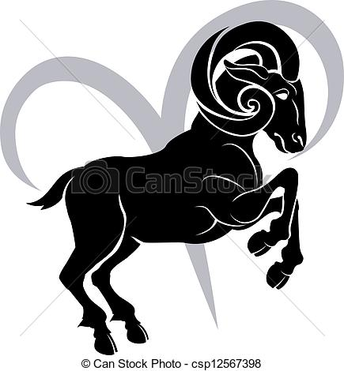
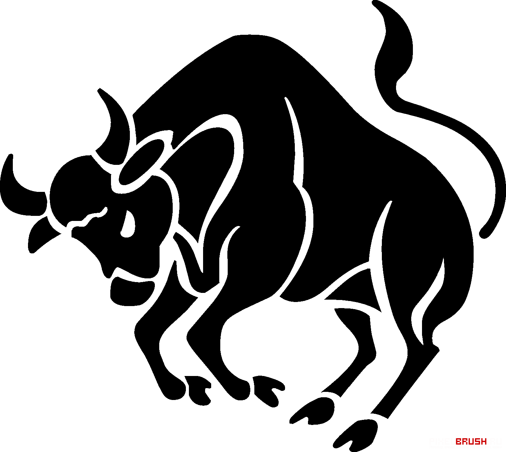
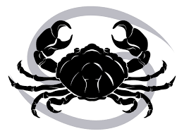
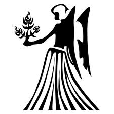
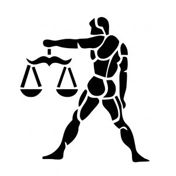
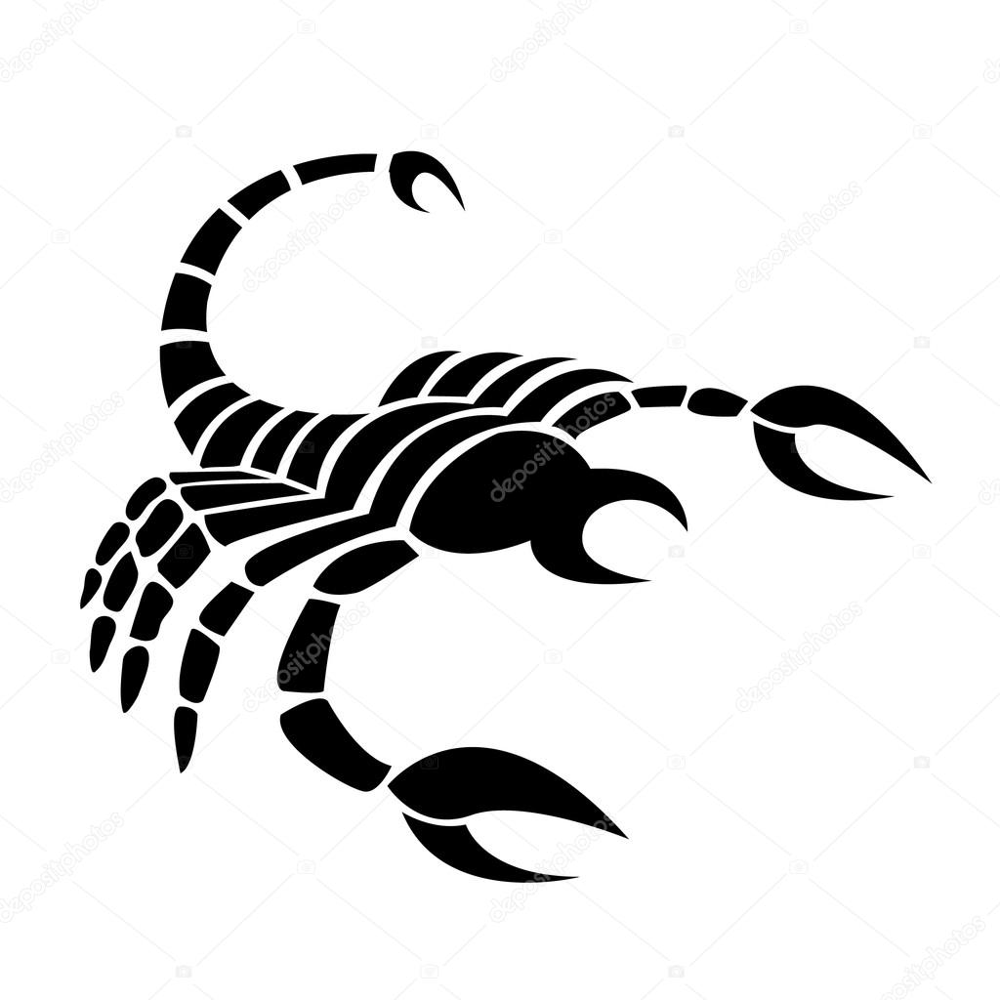
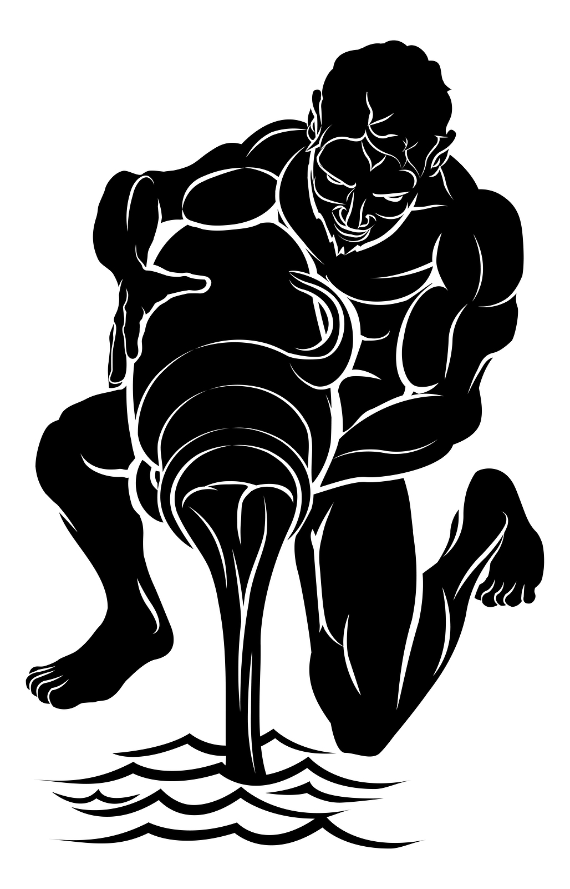
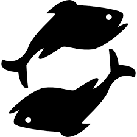

First post
| Signe | Descriptif | Traits Positifs | Traits Negatifs |
| 
Belier :21 mars-19 avril |
Assuré | Franc,spontane,courageux,enthousiaste,juvenile,attitude gagneur,pionnier |
casse-cou,instable,capricieux,n'ecoute que lui meme |
| 
Taureau :20 avril-20 mai |
Permanent |
Stable,organise,fidele,fiable,realiste,travailleur,productif,securisant |
Tetu/Borne,possessif,rigide,grincheux,trop programatique |

Gemeaux :21 mai-20 juin |
Communication |
Tetu/Borne,possessif,rigide,grincheux,trop programatique |
Superficiel(le),nerveux,menteur,impatient,monqueur,contradicteur |
| 
Cancer :21 juin-22 juillet |
Sensibilité |
Protecteur/Devouement,gentil,sensible,attention,imagination,memoire a l'acoute |
Jaloux/Capricieux,capricieux,influencable,dependance,bouderies,passeisme |

Lion :23 juillet-22 aout |
Pouvoir |
Integre,flamboyant,audacieux,debrouillard,innovant,genereux |
Autoritaire/Orgueil,arrogant,cherche le pouvoir,narcissique |
| 
Vierge :23 aout-22 septembre |
Critique |
Discipline/Logique/Rigoureux,analytique,scientifique,modeste,meticuleux |
Manque de souplesse/Rancunier,trop critique,cynique,mefiant,calculateur |
| 
Balance :23 septembre-22 octobre |
Harmonie |
Diplomatique,plaisant,romantique,gentillesse,sens de justice,generosite,humour |
Indecise/Hesitante,emotionnelle,capricieuse,distante |
| 
Scorpion :23 octobre-21 novembre |
Intensité |
Profond/Genereux ,determine,diligent,charmant,perseverant,intuitif,devoue |
Impitoyable/egoiste,manque de souplesse,menteur,desobeissant,provocateur |

Sagittaire :22 novembre-21 decembre |
Aventurier |
Judicieux/imaginatif,flexible,adaptable,aime la liberte,joie de vivre |
Trop moraliste/Inconstant,direct,irresponsable,manque de continuite |
Capricorne :22 decembre-19 janvier |
Prudence |
Interiorise/Trop raisonne,mefiant,interiorise,renferme,froid,peu communicatif |
|
| 
Verseau :20 janvier-18 fevrier |
Humanitarisme |
iberal/sens de l'amitie,humanitaire,sens de la justice de paix,inventif |
Excentrique,impatient,n'accept pas la mediocrite |
| 
Poisson :19 fevrier-20 mars |
Impressionnable |
Charitable/Compatissant,,humble,humaniste,compatissant,devoue,detache,versatile |
Anxieux/Irresponsable,difficulte a affrontte la realite,escroc,lache,traitre,menteur |